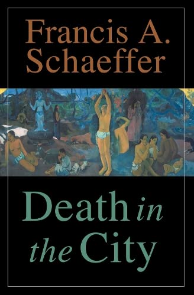
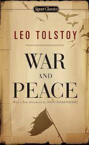

DEATH IN CITY
AMRITA PRITAM
In my younger and more vulnerable years my father gave me some advice that I've been turning over in my mind ever since. 'Whenever you feel like criticizing anyone,' he told me, 'just remember that all the people in this world haven't had the advantages that you've had.'"This book is an attack on current city planning and rebuilding." She describes a trip to Boston's North End neighborhood in 1959, finding it friendly, safe, vibrant and healthy, her experience against her conversations.
Language:French
ARMS AND MAN
BERNARD SHAW
Left alone with Bluntschli, Raina realizes that he sees through her romantic posturing, but that he respects her as a woman, as Sergius does not. She reveals that she left a photograph of herself in the pocket of the coat, inscribed "To my chocolate-cream soldier", but Bluntschli says that he didn't find it and that it must still be in the coat pocket. Bluntschli gets a telegram informing him of his father's death: he must now take over the family business, several luxury hotels in Switzerland.
Language:English

WAR AND PEACE
LEO TOLSTOY
Tolstoy began writing War and Peace in 1863, the year that he finally married and settled down at his country estate. In September of that year, he wrote to Elizabeth Bers, his sister-in-law, asking if she could find any chronicles, diaries or records that related to the Napoleonic period in Russia. He was dismayed to find that few written records covered the domestic aspects of Russian life at that time, and tried to rectify these omissions in his early drafts of the novel.Good end content.
Language:Spanish
